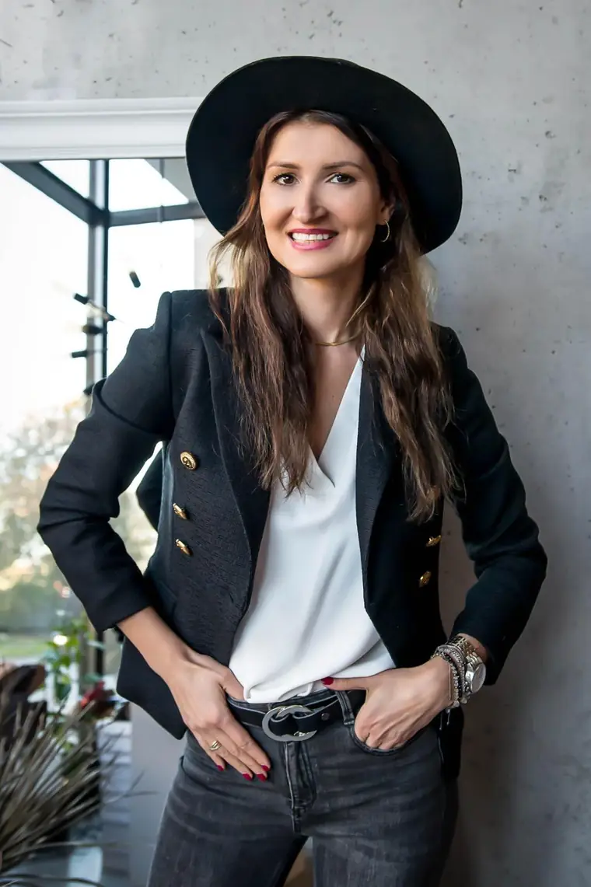
Stylistka w Poznaniu. Pokaż swoje piękno
Marta Rasch - od ponad 18 lat stylistka i showroom polskiej mody przy Kościelnej 17. Analiza kolorystyczna, przegląd szafy i zakupy ze stylistką, także online.
Umów bezpłatne 15 minut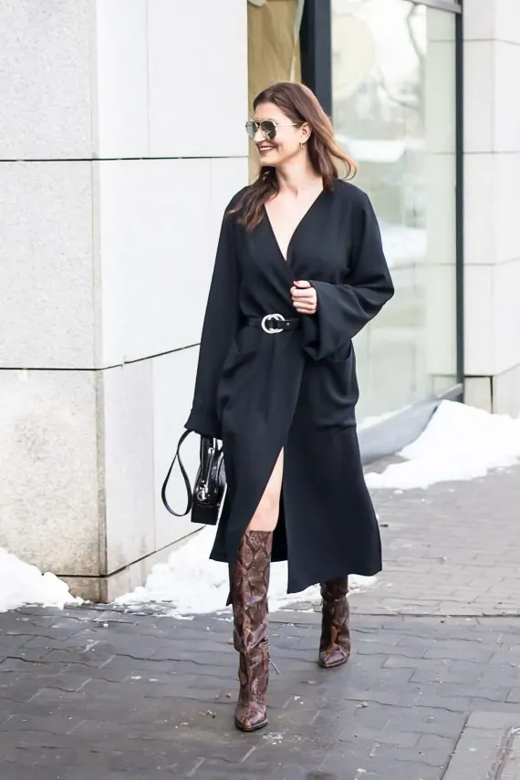
Marta Rasch, osobista stylistka
Jestem absolwentką Uniwersytetu Ekonomicznego. Korporację zamieniłam na modę i nigdy tej decyzji nie żałowałam. Od ponad 18 lat prowadzę w Poznaniu showroom z polskimi projektantami, a życie dzielę między Poznań i Londyn - widzę, jak ubierają się kobiety w różnych miejscach świata.
Prowadzę metamorfozy, analizę kolorystyczną i analizę sylwetki, przeglądy szaf i zakupy ze stylistką. Przez ponad 5 lat pisałam rubrykę „Moda” w miesięczniku „Sukces po poznańsku”, stylizowałam dziesiątki reklam telewizyjnych, sesji i filmów. Pokazuję, jak tworzyć szybkie codzienne zestawy i jak kupować mniej, a lepiej.
Współpracowałam m.in. z: Karolem Okrasą i Paskalem Brodnickim (kampania Lidla 2013-2015), Dorotą Wellman, Borysem Szycem, Magdaleną Boczarską, Szymonem Bobrowskim, Katarzyną Bujakiewicz, Krzysztofem Ibiszem, Beatą Sadowską i Darkiem Kuźniarem.
Usługi i cennik
Twój wizerunek to komunikat, który wysyłasz, zanim cokolwiek powiesz. Większość spotkań odbywa się online, analizy także w butiku w Poznaniu.
Analiza kolorystyczna i analiza sylwetki
699 złok. 1,5 godziny, online lub w butiku w PoznaniuAnaliza kolorystyczna
499 złok. 1 godzina, online lub w butikuPrzegląd Twojej szafy online
799 złok. 3 godziny, każda kolejna godzina 150 złPrzegląd szafy z Martą w Twoim domu
999 zł3-4 godziny, każda kolejna godzina 200 złZakupy ze stylistką w galerii handlowej
999 złok. 4 godziny, każda dodatkowa godzina 200 zł
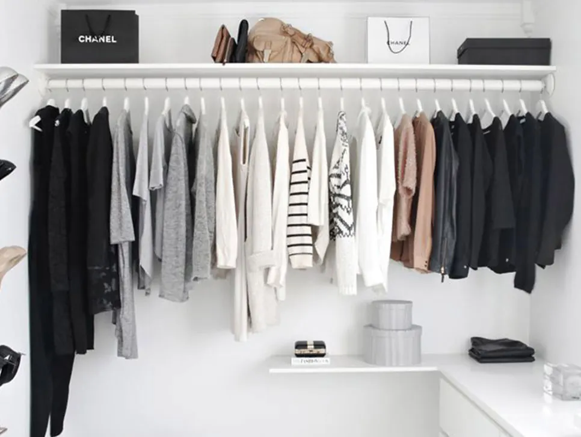
Nie wiesz, od czego zacząć? Pierwsze 15 minut rozmowy wideo jest bezpłatne i do niczego nie zobowiązuje.
Umów bezpłatną konsultacjęJak wygląda konsultacja
- Rozmowa. Zaczynamy od Twojego stylu życia, pracy i codziennych wyzwań - po co Ci stylistka.
- Twoja szafa dziś. Za dużo ubrań, których nie nosisz, bo nie wiesz, jak je połączyć? A może za mało?
- Gotowe zestawy. Z tego, co już masz, układamy stroje na wybrane okazje i spisujemy, czego brakuje.
- Moodboard. Twoja prywatna tablica inspiracji: styl dopasowany do figury, temperamentu i trybu życia.
- Lista i kolejny krok. Dostajesz linki i inspiracje, a jeśli trzeba, umawiamy wspólne zakupy.
Co otrzymujesz po konsultacji
- ponad 80-stronicowy raport PDF o Twojej sylwetce i typie kolorystycznym
- ponad 20 indywidualnych wskazówek, co nosić, a czego unikać
- wiedzę, jakie kolory wybierać i jak je łączyć
- garderobę kapsułową w Twoich kolorach
- listę inspiracji i gotowych zestawów
- triki stylistki, dzięki którym rano ubierasz się szybko i z przyjemnością
Konsultacje odbywają się w większości online, więc nigdzie nie musisz się spieszyć.
Showroom polskiej mody przy Kościelnej 17
Novamoda łączy kobiety, które szukają stylu, z małymi markami szytymi w Polsce. Jest też marka własna Novamoda: przemyślane modele z dobrych materiałów, a na życzenie ubrania szyte na miarę.
W showroomie i sklepie: Maio Poland, Barbara Bechta, Belette, Bello Design, Missu Design, La Dame, No Sugar, Odzieżowe Pole, Tressore, Auerin Jewellery, Equipo Bags, MyBag i Novamoda.
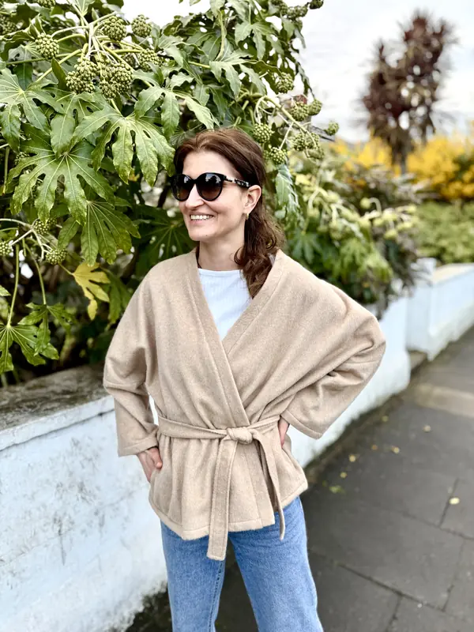
Kimono swetrowe wiązane499 zł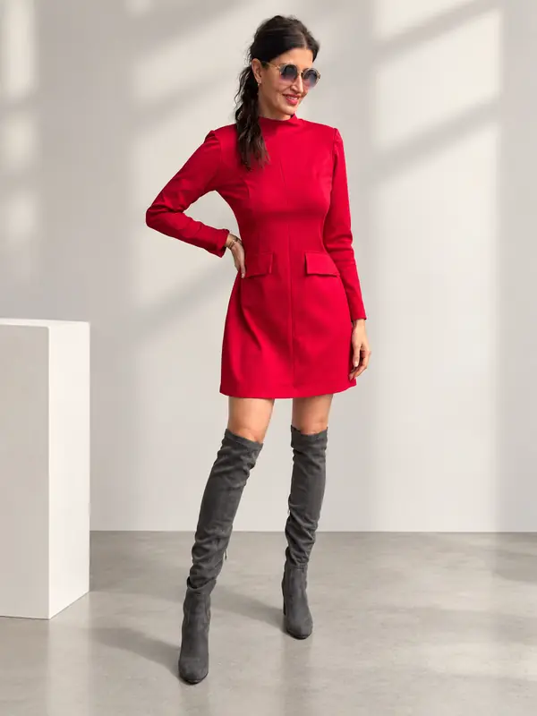
Sukienka Audrey, mini z długim rękawem450 zł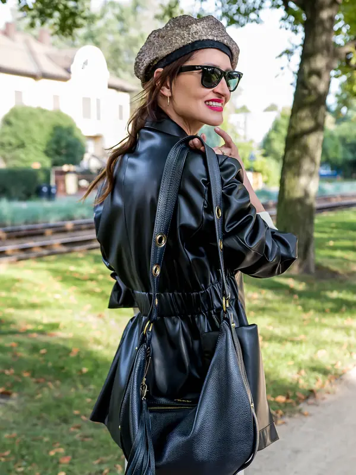
Skórzana marynarka z marszczeniem599 zł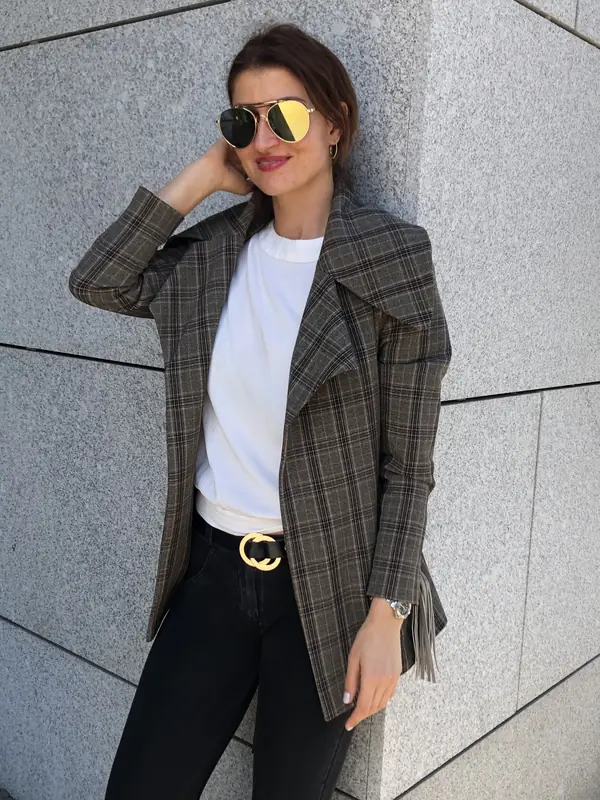
Kurtka w kratę, brąz599 zł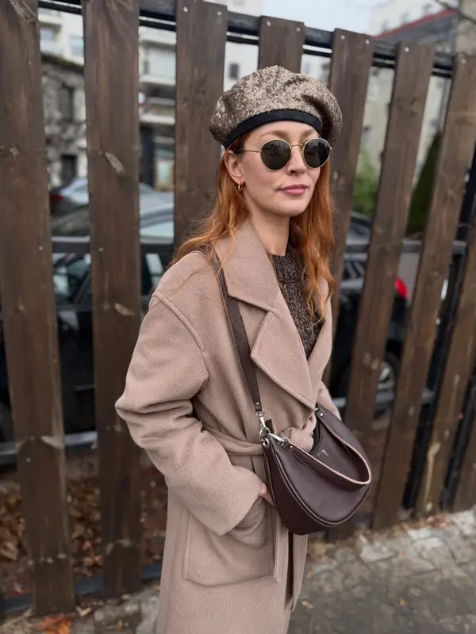
Beret z cekinami199 zł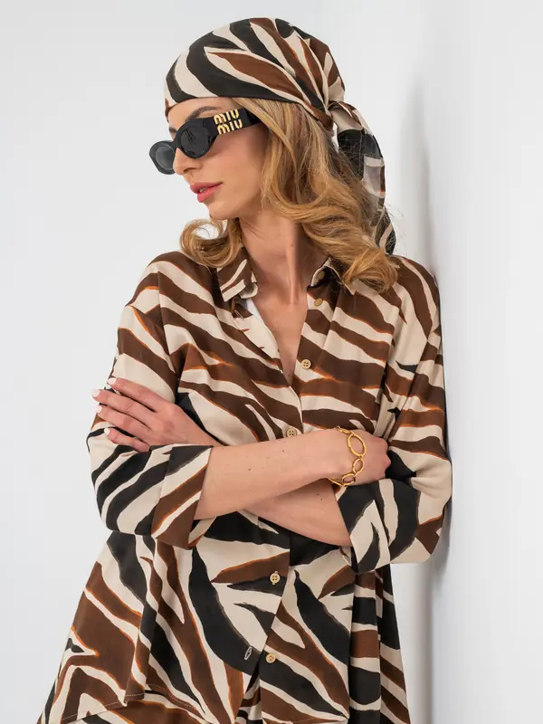
Koszula oversize safari299 zł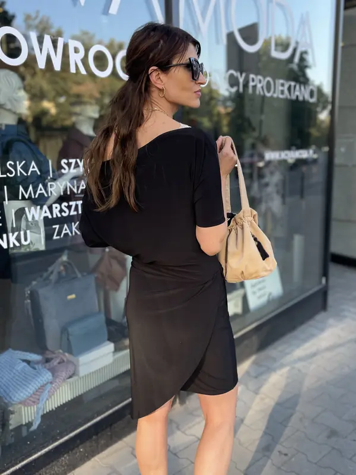
Czarna mini sukienka Tina399 zł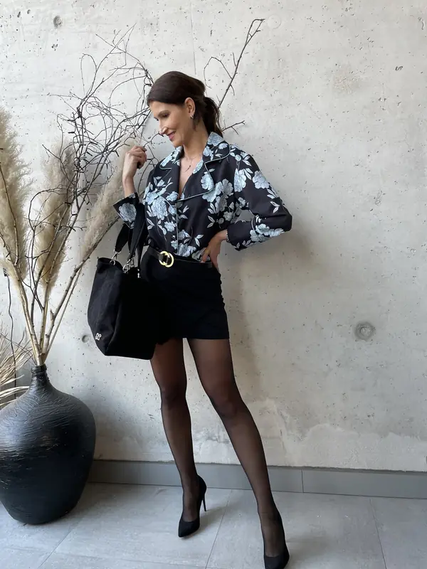
Koszula czarna w błękitne kwiaty299 zł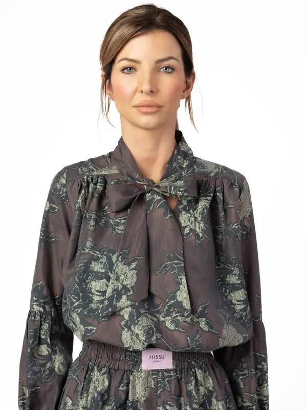
Bluzka w ciemne kwiaty z kokardą350 zł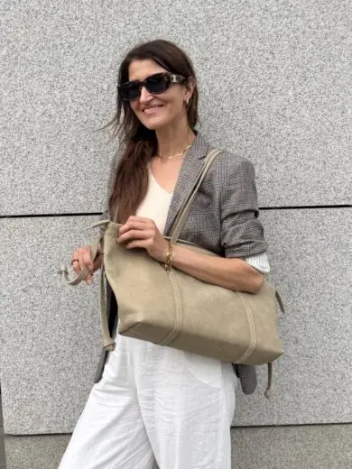
Duża torba typu shopper999 zł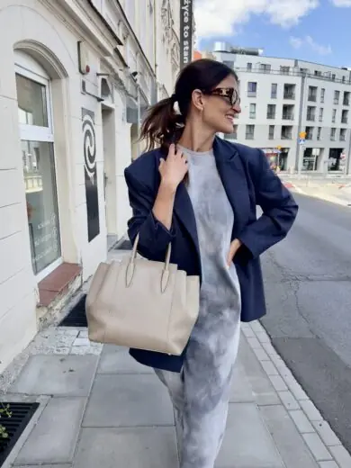
Granatowa wełniana marynarka799 złShowroom: tel. 575 870 703, ul. Kościelna 17, Poznań
Portfolio
Kostiumy do filmu, kampanie reklamowe i sesje modowe, przy których pracowałam.
Co mówią klientki
„Ogromna oszczędność czasu i pieniędzy - w końcu mam porządek w szafie i w głowie.”
„Teraz z przyjemnością chodzę na zakupy, bo dokładnie wiem, czego chcę i czego potrzebuję.”
„Z Martą Rasch i Novamoda po raz pierwszy spotkałem się na planie serii spotów reklamowych. Marta odpowiadała za kostiumy, zwracając uwagę przywiązaniem do detalu i poczuciem estetyki. Naturalnym krokiem była współpraca przy filmie fabularnym „Na drodze”.”Bartosz Nowacki, ALISTAN PRODUCTIONS, reżyser
„Stałam się pewniejsza siebie, w pracy i w życiu towarzyskim.”
„Teraz codzienne tworzenie zestawów stało się przyjemnością i dobrą zabawą.”
„Bardzo się bałam tego spotkania, zakupów i mojej metamorfozy, ale jak tylko się spotkałyśmy, moje obawy pękły jak bańka mydlana. Moja metamorfoza była jedną z piękniejszych chwil w moim życiu.”Katarzyna K., pakiet metamorfozy w prezencie urodzinowym
„Już nie wydaję bezsensownie pieniędzy na ubrania, które potem zalegają w szafie.”
„Są profesjonalne, solidne, pełne energii i pasji. Wyczucia stylu można się nauczyć, ale one to po prostu w sobie mają i chętnie się tym dzielą.”Agnieszka Szudzińska, adaga s.c.
„Wiem, jak nosić ubrania ze swojej szafy w wielu świetnych zestawach.”
Więcej opinii klientek: Novamoda w Google
Umów się
Kontakt do niczego Cię nie zobowiązuje. Chętnie odpowiem na Twoje pytania i umówimy bezpłatne 15 minut rozmowy wideo.